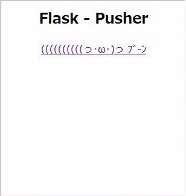
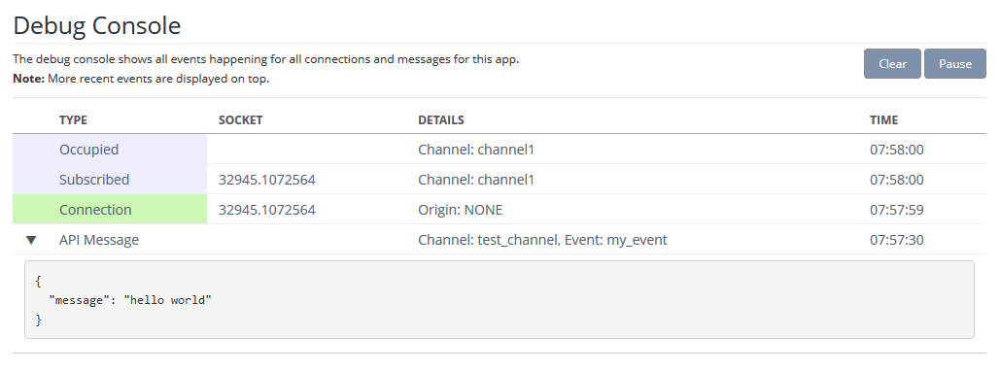
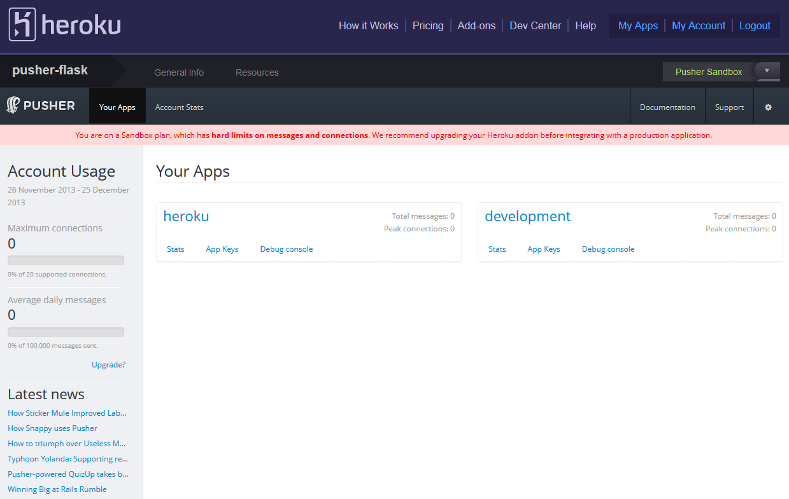

FlaskでPusherを使う
FlaskでPusher使ってみたのでメモ。
Contents
登録してApp作成
Pusher | HTML5 WebSocket Powered Realtime Messaging Service
Signup。
管理画面にログインできるようになるので、New appをクリックして新しいappを作成。
とりあえず使ってみる
前に必要なモジュールを入れる。
$ mkvirtualenv Pusher_Sample
$ pip install pusher flask
App Keysにコード例があるので参考にする。
手っ取り早く、以下のコードを実行するとApp Keysのページでalertするみたいなのでpythonインタプリタからコピペで実行してみます。
import pusher
p = pusher.Pusher(
app_id='<id>',
key='<key>',
secret='<secret key>'
)
p['test_channel'].trigger('my_event', {'message': 'hello world'})
hello worldが出てくるはずです。
Debug Consoleから詳しい様子を確認できます。
試しに作ってみたやつ
((((((((((っ･ω･)っ ﾌﾞ-ﾝをクリックすると、AjaxでPostして((((((((((っ･ωΣ[柱]ｶﾞｺｯ! をPusherに投げます。
Pusherになにか来たらevent1でalertするだけ。
静的なサイトにしか見えませんが、その後ろではただalertを出すためだけにPusherが働いています。
# -*- encoding: utf-8 -*-
from flask import Flask, render_template, redirect, url_for, request
import pusher
app = Flask(__name__)
app.config.from_pyfile("app.cfg")
p = pusher.Pusher(
app_id = app.config["ID"],
key = app.config["KEY"],
secret = app.config["SECRET"]
)
@app.route('/')
def index():
return render_template('index.html')
@app.route('/pusher', methods=["POST"])
def pusher():
if request.method == 'POST':
p['channel1'].trigger('event1', {'message': "((((((((((っ･ωΣ[柱]ｶﾞｺｯ!"})
return 'ok'
if __name__ == '__main__':
app.debug = True
app.run()
Javascriptはこんな感じ。
var pusher = new Pusher('<key>');
var channel = pusher.subscribe('channel1');
channel.bind('event1', function(data) {
alert(data.message);
});
$('#push').click( function(){
$.ajax({
type: "POST",
url: "{{ url_for('pusher') }}",
contentType: 'application/json',
success: function(data) {
console.log(data);
}
});
});
嵌ったこととか
Timestamp expired: Given timestamp (2013-06-17T15:39:38Z) not within 600s of server time (2013-06-17T17:09:21Z)
Pusherサーバと時間がずれているとダメみたい。
手元のサーバーの時間を合わせる。
$ sudo date MMddhhmmyyyy
もし合わなくて'sudo: timestamp too far in the future:'と言われたら
$ sudo -K
$ sudo date MMddhhmmyyyy
頑張って合わせたが、なんか日本の時間とはずいぶんずれたような気がしたがあまり気にしない。
おまけ - Herokuにデプロイ
手順。
1. Herokuの準備
適当なAppを追加して、Add-onにPusherのSandbox(無料版)を追加します。
gitのクローン先をコピペしてremoteに追加。
$ git remote add heroku git@heroku.com:<app name>
Pusher Add-onをクリックすると、Heroku in Pusherな管理画面が出てくる。
{kind=link}
herokuのほうを使う。
3. HerokuのPusherを使う準備
HerokuのPusherを使う場合、Pythonのコードを書き換える必要がある。
Pusherのprivate keyを晒すわけにはいかないので、Herokuの環境変数に持たせる。
その影響で、アプリのPusherのオブジェクトを生成している部分を書き換える必要がある。
- app.config.from_pyfile("app.cfg")
- p = pusher.Pusher(
- app_id = app.config["ID"],
- key = app.config["KEY"],
- secret = app.config["SECRET"]
- )
+ p = pusher.pusher_from_url()
※参考 : pusher/pusher_client_python
pusher_from_urlは引数なしだと環境変数PUSHER_URLを参照しているので、Herokuに環境変数PUSHER_URLを追加する。
$ heroku config:app PUSHER_URL="http://<key>:<private key>@api.pusherapp.com/apps/<id>" --app <your app name>
URLはHeroku-Pusher管理画面のApp keysのRubyのexampleにあった。